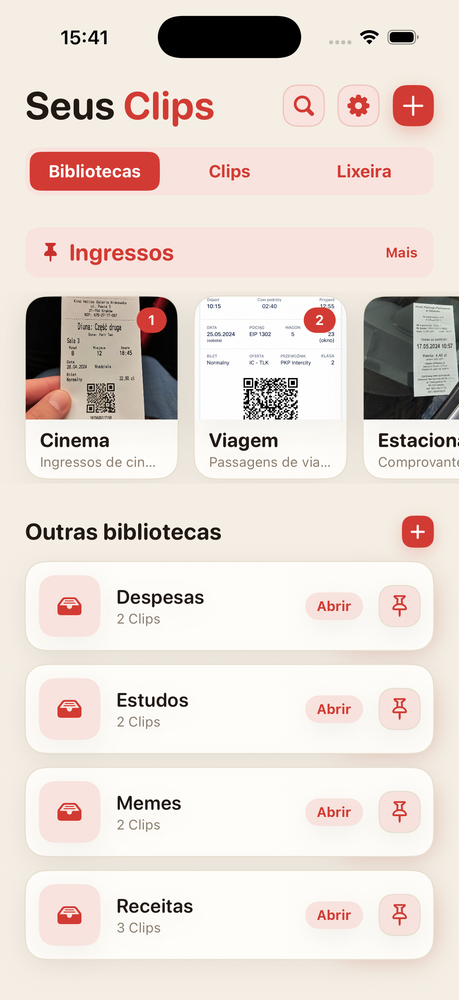
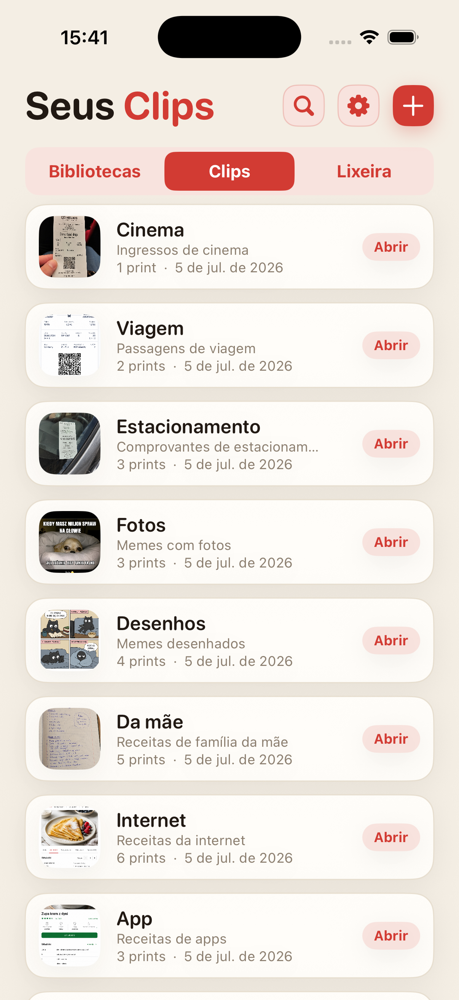
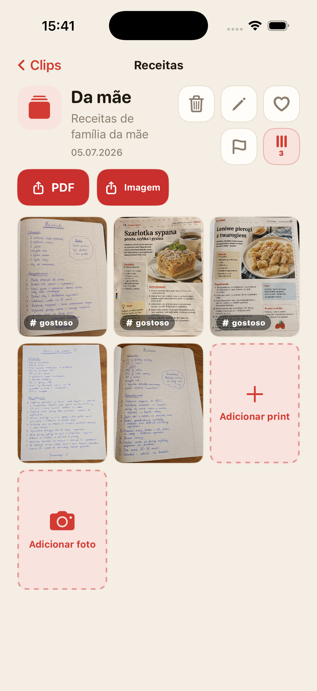
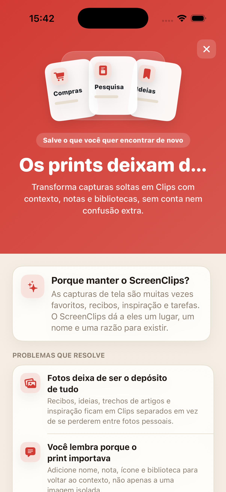

A captura se perde no meio de tudo
Você salva algo importante e, uma semana depois, está rolando o Fotos como se fosse uma pasta antiga.
Transforme capturas de tela soltas em Clips com nome, nota e biblioteca própria. Sem conta, sem nuvem e sem caçar tudo na galeria todos os dias.

Recibos, receitas, ingressos, ideias e trechos de artigos acabam entre selfies, memes e imagens aleatórias. A nuvem existe, mas o endereço do hotel da semana passada ainda pode ser impossível de encontrar.
Você salva algo importante e, uma semana depois, está rolando o Fotos como se fosse uma pasta antiga.
A imagem sozinha muitas vezes não basta. O ScreenClips dá espaço para nome e nota.
Compras, trabalho, viagens e estudos merecem lugares próprios, não uma pilha gigante no Fotos.
Junte receitas, recibos, ingressos, pesquisas, anotações de estudo ou qualquer coisa que você queira encontrar de novo.
Um Clip reúne tudo em torno de uma coisa concreta. Ele tem nome, descrição e suas próprias capturas.
Abra a biblioteca, escolha o Clip e continue de onde parou. Sem longas viagens pela galeria.

O ScreenClips não tenta adivinhar tudo por você. Ele dá uma estrutura simples: biblioteca para o tema, Clip para o assunto, capturas e imagens lá dentro.
Guarde materiais dentro de Clips e continue adicionando conforme o assunto cresce.
Transforme um Clip em um arquivo legível quando quiser enviar ou guardar fora do app.
Favoritos, sinalizadores e ordem onde antes só havia rolagem infinita.

O ScreenClips funciona localmente. Você não precisa criar conta nem entregar recibos, notas e planos a mais um serviço só para ter organização.
O Premium não deixa o app mais complicado. Ele só dá mais espaço para bibliotecas, Clips e capturas. O preço aparece na App Store.
Baixar naApp Store
Não. Quando você remove uma imagem de um Clip, o original continua no Fotos.
Sim. O ScreenClips foi feito como um organizador local no iPhone.
Não. O ScreenClips não exige conta para organizar Clips.
Sim. Quando elas pertencem ao mesmo Clip, você pode adicionar capturas de tela e fotos.
O ScreenClips organiza aquilo que você salvou para "mais tarde". Dessa vez, o "mais tarde" dá para encontrar de verdade.
Baixar naApp Store